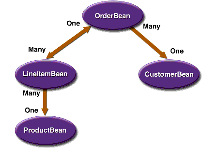

What Is an Entity Bean?
An entity bean represents a business object in a persistent storage mechanism. Some examples of business objects are customers, orders, and products. In the Application Server, the persistent storage mechanism is a relational database. Typically, each entity bean has an underlying table in a relational database, and each instance of the bean corresponds to a row in that table. For code examples of entity beans, please refer to Chapters 26 and 27.
What Makes Entity Beans Different from Session Beans?
Entity beans differ from session beans in several ways. Entity beans are persistent, allow shared access, have primary keys, and can participate in relationships with other entity beans.
Persistence
Because the state of an entity bean is saved in a storage mechanism, it is persistent. Persistence means that the entity bean's state exists beyond the lifetime of the application or the Application Server process. If you've worked with databases, you're familiar with persistent data. The data in a database is persistent because it still exists even after you shut down the database server or the applications it services.
There are two types of persistence for entity beans: bean-managed and container-managed. With bean-managed persistence, the entity bean code that you write contains the calls that access the database. If your bean has container-managed persistence, the EJB container automatically generates the necessary database access calls. The code that you write for the entity bean does not include these calls. For additional information, see the section Container-Managed Persistence.
Shared Access
Entity beans can be shared by multiple clients. Because the clients might want to change the same data, it's important that entity beans work within transactions. Typically, the EJB container provides transaction management. In this case, you specify the transaction attributes in the bean's deployment descriptor. You do not have to code the transaction boundaries in the bean; the container marks the boundaries for you. See Chapter 30 for more information.
Primary Key
Each entity bean has a unique object identifier. A customer entity bean, for example, might be identified by a customer number. The unique identifier, or primary key, enables the client to locate a particular entity bean. For more information, see the section Primary Keys for Bean-Managed Persistence.
Relationships
Like a table in a relational database, an entity bean may be related to other entity beans. For example, in a college enrollment application,
StudentBeanandCourseBeanwould be related because students enroll in classes.You implement relationships differently for entity beans with bean-managed persistence than those with container-managed persistence. With bean-managed persistence, the code that you write implements the relationships. But with container-managed persistence, the EJB container takes care of the relationships for you. For this reason, relationships in entity beans with container-managed persistence are often referred to as container-managed relationships.
Container-Managed Persistence
The term container-managed persistence means that the EJB container handles all database access required by the entity bean. The bean's code contains no database access (SQL) calls. As a result, the bean's code is not tied to a specific persistent storage mechanism (database). Because of this flexibility, even if you redeploy the same entity bean on different J2EE servers that use different databases, you won't need to modify or recompile the bean's code. In short, your entity beans are more portable if you use container-managed persistence than if they use bean-managed persistence.
To generate the data access calls, the container needs information that you provide in the entity bean's abstract schema.
Abstract Schema
Part of an entity bean's deployment descriptor, the abstract schema defines the bean's persistent fields and relationships. The term abstract distinguishes this schema from the physical schema of the underlying data store. In a relational database, for example, the physical schema is made up of structures such as tables and columns.
You specify the name of an abstract schema in the deployment descriptor. This name is referenced by queries written in the Enterprise JavaBeans Query Language (EJB QL). For an entity bean with container-managed persistence, you must define an EJB QL query for every finder method (except
findByPrimaryKey). The EJB QL query determines the query that is executed by the EJB container when the finder method is invoked. To learn more about EJB QL, see Chapter 29.You'll probably find it helpful to sketch the abstract schema before writing any code. Figure 23-1 represents a simple abstract schema that describes the relationships between three entity beans. These relationships are discussed further in the sections that follow.

Figure 23-1 A High-Level View of an Abstract Schema
Persistent Fields
The persistent fields of an entity bean are stored in the underlying data store. Collectively, these fields constitute the state of the bean. At runtime, the EJB container automatically synchronizes this state with the database. During deployment, the container typically maps the entity bean to a database table and maps the persistent fields to the table's columns.
A
CustomerBeanentity bean, for example, might have persistent fields such asfirstName,lastName,phone, andemailAddress. In container-managed persistence, these fields are virtual. You declare them in the abstract schema, but you do not code them as instance variables in the entity bean class. Instead, the persistent fields are identified in the code by access methods (getters and setters).Relationship Fields
A relationship field is like a foreign key in a database table: it identifies a related bean. Like a persistent field, a relationship field is virtual and is defined in the enterprise bean class via access methods. But unlike a persistent field, a relationship field does not represent the bean's state. Relationship fields are discussed further in Direction in Container-Managed Relationships.
Multiplicity in Container-Managed Relationships
There are four types of multiplicities: one-to-one, one-to-many, many-to-one, and many-to-many.
One-to-one: Each entity bean instance is related to a single instance of another entity bean. For example, to model a physical warehouse in which each storage bin contains a single widget,
StorageBinBeanandWidgetBeanwould have a one-to-one relationship.One-to-many: An entity bean instance can be related to multiple instances of the other entity bean. A sales order, for example, can have multiple line items. In the order application,
OrderBeanwould have a one-to-many relationship withLineItemBean.Many-to-one: Multiple instances of an entity bean can be related to a single instance of the other entity bean. This multiplicity is the opposite of a one-to-many relationship. In the example just mentioned, from the perspective of
LineItemBeanthe relationship toOrderBeanis many-to-one.Many-to-many: The entity bean instances can be related to multiple instances of each other. For example, in college each course has many students, and every student may take several courses. Therefore, in an enrollment application,
CourseBeanandStudentBeanwould have a many-to-many relationship.Direction in Container-Managed Relationships
The direction of a relationship can be either bidirectional or unidirectional. In a bidirectional relationship, each entity bean has a relationship field that refers to the other bean. Through the relationship field, an entity bean's code can access its related object. If an entity bean has a relative field, then we often say that it "knows" about its related object. For example, if
OrderBeanknows whatLineItemBeaninstances it has and ifLineItemBeanknows whatOrderBeanit belongs to, then they have a bidirectional relationship.In a unidirectional relationship, only one entity bean has a relationship field that refers to the other. For example,
LineItemBeanwould have a relationship field that identifiesProductBean, butProductBeanwould not have a relationship field forLineItemBean. In other words,LineItemBeanknows aboutProductBean, butProductBeandoesn't know whichLineItemBeaninstances refer to it.EJB QL queries often navigate across relationships. The direction of a relationship determines whether a query can navigate from one bean to another. For example, a query can navigate from
LineItemBeantoProductBeanbut cannot navigate in the opposite direction. ForOrderBeanandLineItemBean, a query could navigate in both directions, because these two beans have a bidirectional relationship.When to Use Entity Beans
You should probably use an entity bean under the following conditions:
- The bean represents a business entity and not a procedure. For example,
CreditCardBeanwould be an entity bean, butCreditCardVerifierBeanwould be a session bean.- The bean's state must be persistent. If the bean instance terminates or if the Application Server is shut down, the bean's state still exists in persistent storage (a database).
All of the material in The J2EE(TM) 1.4 Tutorial is copyright-protected and may not be published in other works without express written permission from Sun Microsystems.